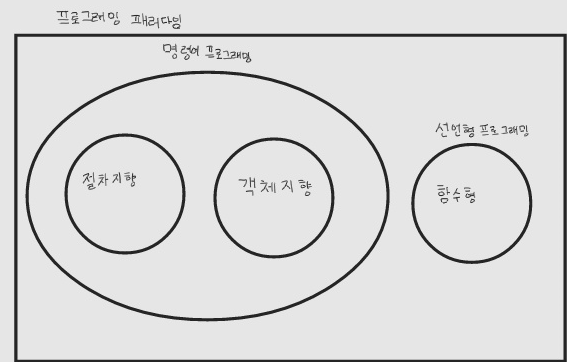
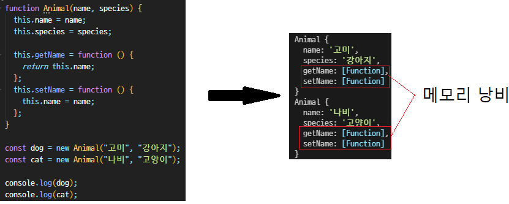

🎨함수형 프로그래밍

프로그래밍 패러다임
프로그래머에게 프로그래밍의 관점을 갖게 하고 코드를 어떻게 작성할 지 결정하는 역할을 한다. 무엇을 해야 할지를 말하기 보다 무엇을 해서는 안되는지 말해준다 라고 생각 할 수 있다.
명령형 프로그래밍 - 문제를 어떻게 해결해야 하는지 컴퓨터에게 명령을 내리는 방법
선언형 프로그래밍 - 무엇을 해결해야 할지에 집중하고 해결방법은 컴퓨터에게 위임하는 방법 (
함수형 패러다임
- 객체지향은 추상화의 최소 단위가 객체인 것처럼 함수형은
함수가 최소 단위이다. 객체지향보다 더 작은 단위로 나눠지므로 재사용성이 높다. - 데이터의 불변성을 지향하기에
동작을 예측하기 쉽고 사이드 이펙트를 방지한다. 사이드 이펙트를 방지한다는 것은 쓰레드 등을 통한 동시성 문제도 해결된다는 의미이다. - 객체지향은 제어 흐름(순차, 분기, 반복, 참조) 전환을 객체를 통해 간접으로 통제하고 함수형은 변수 할당을 통제하여 4가지 제어 흐름을 통제한다고 할 수 있다.
장점
- 상태가 없기 때문에 사이드 이펙트가 없다.
- 재사용성이 높다.
- 코드가 짧고 간결하다.
단점
- 상태가 없기 때문에 어떠한 현상을 만들기 위해 다른 코드를
생성하거나 복사해서 조정해야 될 수도 있으며메모리도 늘어날수 있다. - 재사용성이 높다면 작은 단위로 나뉘게 된다. 이렇게 작은 단위가 많아지면 오히려
더 복잡할 수도 있다. - 코드가 짧고 간결해지려면 많은 숙련도를 요구한다.
강점
함수형 프로그래밍은 상태가 없고 재귀나 파이프를 통해 흘러가는 Data Flow에서 데이터의 제어없이 필요한 함수만 가지고 해결이 가능한 강점이 있다.
멀티 패러다임
Javascript는 멀티 패러다임이 가능하다. 굳이 객체지향과 함수형으로 나눌 필요없이 둘 다 쓰자!!
🎏객체지향과 프로토타입
객체란?
객체지향의 객체는 현실에 있는 것을 추상화한 것이다. 추상이란 사물이 지니고 있는 여러 측면 중 특정한 부분만 보는 것이다.
객체 지향이란?
- 객체 위주로 설계하고 프로그래밍하는 패러다임
- 객체지향 언어에선 추상화의
최소 단위가 객체 - 각각의 객체는 메시지를 주고 받으며 통신 할 수 있다.
객체지향의 언어와 패러다임에 대한 오해
- 객체지향은 패러다임일 뿐 언어와는 관계가 없다. 패러다임≠언어
- 언어는 지향하는 것을 조금 더 편하게 구현할 수 있게
도와줄 뿐이다. - 따라서 클래스가 없는 javascript, go, c 언어로도 객체지향 프로그래밍을 할 수 있다.
- 자바스크립트는 프로토타입을 통해 객체지향을 표현한다.
객체지향의 패러다임에 우위가 있다는 오해
- 절차지향보다 객체지향이 무조건 더 좋은것은 아니다.
상황에 따라 다름간단한것은 절차지향 복잡한것은 객체지향을 사용하는 것이 좋다. - 만들어야하는 프로그램에 따라 절차지향이 더 적합할 수 있다.
- 비교적 간단한 프로그램일 수록 절차지향이 더 만들고 쉽고 직관적이다.
- 객체지향은 객체간 통신하기 때문에 흐름이 더 직관적이어서 더 복잡한 프로그램에 적합하다.
프로토 타입(prototype)
자바스크립트의 객체는 클래스 기반 언어처럼 속성(Attribute)과 행위(Method)를 정의할 수 있다. 따라서 객체지향 프로그래밍이 가능하다. 객체 생성 방법은 객체리터럴, Object, 생성자 함수 세가지 방법을 이용할 수 있다.
하지만 객체로 클래스를 생성할 때는 이와 같이 메모리 문제가 생긴다.

이렇게 사용하지 않는 메소드의 메모리 문제를 해결하려면 prototype을 사용해서 해결하면 된다.
처음 console.log에 dog와 cat에는 메서드가 사라지게 되고, prototype으로 선언되어 Animal의 메서드를 링크하고 있다. 이렇게 메모리 문제를 해결할 수 있다.
효율적으로 프로토타입 설정하기 (상속 흉내 내기)
- 부모 객체를 이용하여 프로토타입 함수 정의하기
- 부모생성자를 빌려 쓸 수 있다.
Object.create를 활용해서 기존 객체를 재활용한다.
🧰모듈
왜 이름이 모듈일까?
JavaScript는 파일 하나가 프로그램이기 때문에 모듈이라 지었을 것이라 추측 제대로된 모듈 역할을 하기 위해 디렉토리 단위를 모듈 개념에 가깝게 사용하는 경우가 많다.
모듈 vs 컴포넌트
모듈은 설계 시점에 의미있는 요소, 컴포넌트는 런타임 시점에 의미있는 요소
특징
- 항상 use strict로 실행된다.
- 모듈 레벨 스코프가 있다.
- 단 한번만 평가 된다. (한번만 실행된다. 다시 실행한다면
미리 선언된 것을 가져옴) - 일반 스크립트는 body태그에 넣을 경우 순서대로 실행되지만 모듈스크립트는 differ옵션을 넣지 않아도
자동 지연 실행된다.
📟이벤트 루프
Javascript는 Single Thread로 동작한다. (Call Stack은 하나만 존재) 동기적으로 실행되는것처럼 보이는 이유는 무엇일까? 그것에 대한 답은 브라우저의 이벤트 루프 덕분이다. 이벤트루프는 Javascript 엔진에 포함되어있지 않다. 브라우저는 Web APIs, Task Queue가 있고, Javascript 엔진과 함께 멀티 쓰레드로 진행되는것을 알수있다.
🃏유니코드
- 유니코드가 없을 때도 각 나라들은 알아서 자국 문자를 잘 표현했다.
- 하지만 다양한 나라가
서로 다른 인코딩 방식을 사용함으로써 호환성 및 확장성에 문제를 일으켰다. 심지어 같은 문자여도 깨지는 경우가 발생했다. - 결국 전 세계 문자를 컴퓨터에서 다룰 수 있도록 만든 표준 시스템을 만들었다.
- 대부분의 문자를 포함하여 이모티콘도 포함되어 있다.
- 코드 포인트 범위 - 0x0 ~ 0X10FFFF(1114112개 문자)
- Surrogate Pair 방법을 이용해 2바이트보다 크게 지정
- 유니코드 CES - Code Point가 어떤 단위로 조합되어 인코딩되는 지 정의한것
💾쿠키와 세션, 웹 스토리지
Http 통신
- HTTP Request는 기본적으로 상태가 존재하지 않음 따라서 서버는 어떤 부라우저에서 요청이 온 것인지 알 수 없다.
- 이때 헤더에 쿠키를 담으면 서버가 쿠키를 읽어 어디서 온 것인지 알 수 있다.
Cookie
- 클라이언트에서 저장, 관리하는 데이터들. 브라우저를 닫아도 데이터를 유지할 수 있다. 서버에서 Set-Cookie를 응답 헤더로 내려주면 클라이언트는 받아서 저장한다.
- 클라이언트에서 자체적으로 조작 가능, 각 상태에 수명을 정할 수 있다.
Set-Cookie
- 키: 값 옵션
- 응답헤더에 담으면 브라우저가 알아서 저장한다.
- 각 데이터엔 여러 옵션이 존재 Expires: 쿠키 만료 날짜를 지정한다. Secure: HTTPS에서만 쿠키를 전송한다. HTTPOnly: 자바스크립트에서 쿠키에 접근 못하도록 막는다. Max-Age: 쿠키 수명을 정한다. 이때 Expires는 무시된다.
쿠키의 취약점
- XSS공격을 당할 수 있다.
- javascript를 이용해 악의적인 사용자가 다른 사용자의 쿠키값을 탈취 할 수 있다.
- 쿠키를 암호화하지 않고 보내면 쿠키값을 중간에 탈취 당할 가능성이 있다. 이를 해결하기 위해 HTTPS가 있음
하지만 서버는 아무리 올바른 쿠키값을 보내도 정확한 사용자를 모름 이를 해결하기 위해 필요한것은 Session
Session
- HTTP Session id를 식별자로 사용자를 구분한다.
- 클라이언트는 HTTP Session Id를 쿠키형태로 저장한다.
- 서버 자체적으로 기록하고 관리한다.
- 세션의 문제점 세션은 서버에 파일로 저장된다. 만약 사용자가 많아진다면? 서버터짐 만약 서버가 2개라면 어떻게 관리해야될까..?
그래서 이러한 문제를 해결하기 위해 서버와 클라이언트간 인증은 별도 토큰을 사용하고 쿠키는 클라이언트 자체적인 지속적인 데이터 관리 용도로 많이 사용한다.
로컬 스토리지
- 데이터를 저장하면 반영구적으로 데이터가 저장된다.
- 브라우저를 종료해도 계속해서 데이터가 남는다.
- 저장했던 도메인과 이용하는 도메인이 다른 경우엔 접근할 수 없다.
- 쿠키와 마찬가지로 Key-Value 형태로 저장한다.
세션 스토리지
- 새 창을 생성할 때마다 개별적으로 저장되는 데이터를 관리한다.
- 브라우저를 닫는 순간 사라진다.
- 같은 도메인이어도 세션이 다르면 데이터에 접근할 수 없다.
- 쿠키와 마찬가지로 Key-Value 형태로 저장한다.
🚑깨달은 점
함수형 프로그래밍을 배우기 전에 패러다임에 대해 알게 되고, 여러가지 프로그래밍( 절차형, 객체지향형) 대해 다른 점은 무엇인지 생각하게 됐다. 추후 함수형, 절차형, 객체지향형 프로그래밍에 대한 비교를 포스팅하고 싶어졌다.
MDN이나 코딩을 하면서 객체를 console.log를 찍어보면 나오던 prototype에 대해 공부를 하게 되어 겁이 났었다. 왜냐하면 항상 모르는 것이기 때문에 이번에도 모를 것이라는 두려움이 더 컸지만 강사님과 함께 차근차근 공부하게 됐고 prototype의 전반적인 이해와 왜 필요한지를 알았기 때문에 이것도 깊이 공부하고 싶어졌다.
모듈은 node js를 활용하면서 많이 접했지만 지연 실행 된다는 점과 디렉토리 단위로 묶는 것을 알게 되어 새로운 경험을 하게 됐다.
이벤트루프에 대해서는 나중에 포스팅 하는걸로..💫
유니코드에 대해 많이는 들어봤지만 이렇게 하나하나 쪼개서 강의를 들어본 거는 처음..! 그래서 익숙치 않았지만 넓은 관점에서는 알아들을 수 있게 이해하게 됐다.
웹브라우저에 대해 전반적인 저장소를 알게 됐고, 필요한 이유와 취약점과 해결법을 알게 됐다.
함수형 프로그래밍: https://mangkyu.tistory.com/111